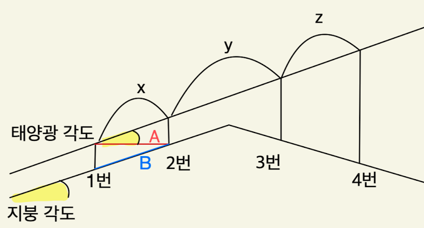

* [지붕각도+태양광각도+A] 또는 [지붕각도+태양광각도+B] 입력 시 [1~4번 기둥 높이, x,y,z] 계산
태양광 각도
지붕 각도
A 거리
B 거리
계산
결과:
{{ index + 1 }}번 높이: {{ data }}
{{ String.fromCharCode('x'.charCodeAt(0) + index) }} 거리: {{ data }}
입력 확인
{{ message }}
확인